整式
【代数式】
用运算符号把数或表示数的字母连结而成的式子叫做代数式.单独的一个数或一个字母也是代数式.
说明: (1) 代数运算有六种: 加、减、乘、除、乘方、开方.分为三级: 第一级加减运算；第二级乘、除运算；第三级乘方、开方.同一种运算中的两种算法是互为逆运算的.
(2) 字母表示数，可以代表任何数，如a 不只是表示正数和零，它也可以表示负数.同样，－a 的正负也不能只看它的表面形式，它可以表示正数，当a<0 时，－a>0.
(3) 在代数式里，数的运算定律普遍适用.
注意: 数和表示数的字母相乘时，应把数字写在字母的前面，并可省略乘号.
例 －2×a 写成－2a.
【代数式的值】
用数值代替代数式中的字母，计算后所得的结果叫做代数式的值.代数式中的字母不能表示使代数式没有意义的数.如，
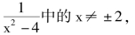
因为当x 表示±2 时代数式的分母出现零.零是不能做分母的，所以x≠±2.代数式的值在它的字母确定以后，它的值也唯一确定.代数式的值是随字母表示数的不同而变化的.
注意: 求代数式的值的步骤中，一定要有将字母表示的数代入代数式的一步；代入后就是运算了，运算时要注意运算顺序.
【整式】
单项式和多项式统称整式.
【单项式】
由数与字母的积或正整数幂组成的代数式叫单项式.单独的一个数字或字母也是单项式.
单项式中的数字因数叫做单项式的数字系数，也叫字母因数的系数.
如－ab2的数字系数是－1.
说明: 系数是1 或－1 时，可将1 省略不写.
在一个单项式中，所有字母指数的和叫做这个单项式的次数.
如3a2bc3的次数是6.
注意: 指数中省略的1，要注意计入次数.
【多项式】
几个单项式的和叫多项式.
在多项式中，每个单项式叫做多项式的项.
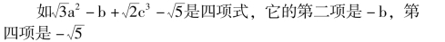
注意: 多项式中各项要带它的符号.
多项式里，次数最高的项的次数是这个多项式的次数.
多项式里不含字母的项叫做常数项.
一个多项式的全称是几次几项式.如上例是三次四项式.
按某一个字母的指数从大到小的顺序来排列的多项式叫做按这个字母的降幂排列；按某个字母的指数从小到大的顺序来排列的多项式叫做按这个字母的升幂排列.
例 把3x2y －y4＋5xy2－x3按x 的降幂排列是－x3＋3x2y ＋5xy2－y4.
例 把a3＋2ba2＋b2＋c2－ba ＋2a2c ＋2ac 按a 的升幂排列.
解 原式＝ (b2＋c2) － (b－2c) a ＋2 (b ＋c) a2＋a3.
说明: 不含某一字母的项，相当于常数项，按同一字母的次数整理它的文字系数，再进行排列.
【同类项】
多项式中所含字母相同，并且相同字母的指数也分别相同的项，叫做同类项.
多项式中如有两个以上的常数项，它们也是同类项.
例 3x2y ＋4xy2－yx2＋2y2x ＋x3－y3中3x2y 与－yx2是同类项；4xy2与＋2y2x 是同类项.
说明: 同类项只需要具备字母相同，它们相同的字母指数相同，与字母顺序无关.因为乘法交换律可使字母顺序改变.
【合并同类项】
把多项式中的同类项合并在一起叫合并同类项.
合并同类项的方法是把同类项的系数相加所得的结果做为系数，字母和字母的指数不变.
例 合并同类项ab2－2a2b－3b2a－ab ＋2ba2－ba
解 原式＝ (1－3) ab2＋ ( －6 ＋2) a2b ＋ ( －1－1)ab ＝－2ab2＋0 ＋ ( －2) ab ＝－2ab2－2ab.
说明: 找出同类项后，把它的系数放在括号内求代数和.
注意: (1) 系数的符号.
(2) 各项之间用加号连结.
(3) 最后写成代数和的多项式形式.
(4) 没有同类项的项，要写入结果中.
【去括号的法则】
括号前面是“ ＋” 号，把括号和它前面的“ ＋” 号去掉，括号里各项都不变；括号前面是“ －” 号，把括号和它前面的“ －” 号去掉，括号里各项都变相反数.
说明: 法则的依据有两条:
(1) 乘法对加法的分配律；(2) “ ＋” 表示相同，“ －” 表示相反.
例 － (a－b) ＝－1· ( ＋a －b) ＝－1 ( ＋a) ＋( －1) · ( －b) ＝－a ＋b.
例 ＋ (a－b) ＝＋1 ( ＋a－b) ＝＋1 ( ＋a) ＋1·( －b) ＝＋a ＋ ( －b) ＝a－b.
注意: 如果去掉＋m (a ＋b－c) 中的括号，可得＋ma＋mb－mc
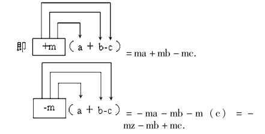
例 化简－5 (x2－2xy ＋y2) －2 (x2－y2)
解 原式＝－5x2＋10xy－5y2－2x2＋2y2
＝－7x2＋10xy－3y2.
【添括号的法则】
在“ ＋” 号后面添括号，括到括号内的各项都不变；在“ －” 号后面添括号，括到括号内的各项都变号(变成相反数).
如a－b ＋c－d ＝a ＋ ( －b ＋c－d)
a－b ＋c－d ＝a－ ( ＋b－c ＋d).
说明: 添括号是改变原来的运算顺序，相当于在原式中添入了＋ ( ) 或－ ( ).
【整式的加减法则】
先去括号；再合并同类项.
例 计算－3x2－4xy－6xy－( －y2) －( ＋2x2) －3y2
解 原式＝－3x2－4xy－6xy ＋y2－2x2－3y2
＝( －3－2)x2＋( －4－6)xy ＋(1－3)y2
＝－5x2－10xy－2y2.
例 计算－3 (a2b ＋2b2) ＋2 (3a2b－b2＋a)
解 原式＝－3a2b－6b2＋6a2b－2b2＋2a
＝ ( －3 ＋6) a2b ＋ ( －6－2) b2＋2a
＝3a2b－8b2＋2a.
注意: 在初学整式加减法时，最好采用上面的规范步骤，为避免合并同类项的错误写出系数相加的过程.
例 已知: A ＝a2－2ab ＋b2，B ＝2ab－a2
求－2A ＋B 与A－2B 的差.
解 ∵－2A ＋B ＝－2 (a2－2ab ＋b2) ＋ (2ab－a2)
＝－2a2＋4ab－2b2＋2ab－a2＝－3a2＋6ab－2b2
A－2B ＝ (a2－2ab ＋b2) －2 (2ab－a2)
＝a2－2ab ＋b2－4a2＋2a2＝3a2－6ab ＋b2.
∴ ( －2A ＋B) － (A－2B)
＝ ( －3a2＋6ab－2b2) － (3a2－6ab ＋b2)
＝－3a2＋6ab－2b2－3a2＋6ab－b2
＝－6a2＋12ab－3b2.
【同底数幂的乘法法则】
底数不变，指数相加，即am·an＝am＋n
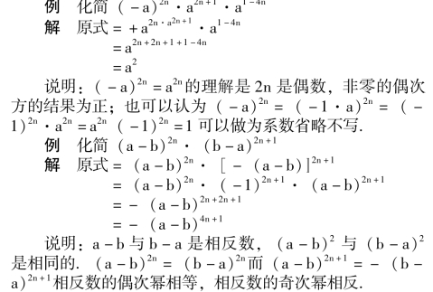
注意: 化同底时的符号.
【单项式乘法法则】
单项式相乘，系数相乘做积的系数，同底数幂相乘，不同底的字母连同它的指数写入积的因式中.
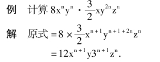
【幂的乘方法则】
底数不变，指数相乘.即(am)n＝amn.例计算(an)2·a
解 原式＝a2n·a1＝a2n＋1.
【积的乘方法则】
积的每一个因式乘方，再把所得的幂相乘.即(ab)n＝an·bn.
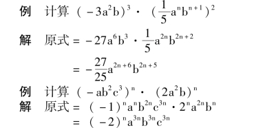
说明: 本题因为是同次幂，所以可以用下面方法解
原式＝ ( －ab2c3·2a2b)n＝ ( －2)na3nb3nc3n
【单项式与多项式相乘法则】
用单项式去乘多项式的每一项，再把所得的积相加.
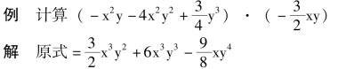
注意: 在运算中要注意系数相乘(特别是符号).
例 化简x (x2＋3) ＋x2(x－3) －3x (x2－x－1)
解 原式＝x3＋3x ＋x3－3x2－3x3＋3x2＋3x
＝－x3＋6x
注意: 上题中的－3x (x2－x ＋1)，要用( －3x) 分别乘多项式的各项.
【多项式乘法法则】
用一个多项式的每一项乘以另一个多项式的每一项，再把所有的积相加.即(a ＋b －c) · (m －n) ＝am ＋bm—cm—an－bn ＋cn.
注意: 乘时要注意顺序性，而且要特别注意符号.
有时为了做题的方便，可以采用竖式乘法的形式.用竖式相乘，要按同一个字母把多项式按同一种形式排列(升幂或降幂).如果缺项时，要注意空位.
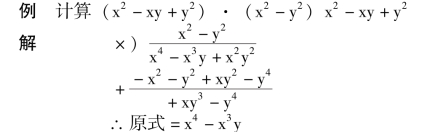
注意: 含两个字母的多项式要按一个字母排列，缺项要空下来.有时为了简化运算过程，把系数抽出计算(分离系数法) (但必须排列) 最后补齐字母.
例 计算(x4－2x2＋x－3) · (x4＋x3－x－3)
∴原式＝x8＋x7－2x6－2x5－5x4－x3＋5x2＋9
注意: (1) 分离系数做乘法，结果的最后一项为常数项.
(2) 上式中过程的第三行应为0，所以没有写，而第四行要错过二项.
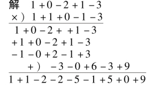
【平方差公式】
两个数的和与这两个数的差的积等于这两个数的平方差，即(a ＋b) · (a－b) ＝a2－b2
说明: 平方差公式的条件是两个数的和与它们的差.在使用公式时要找出相关的两个数.
例 计算( －3a－2b) ( －2b ＋3a)
解 原式＝ ( －2b－3a) ( －2b ＋3a)＝ ( －2b)2－ (3a)2＝4b2－9a2
注意: 例题中的两个数是－2b 和3a.在使用公式时，要由相反的项找到两个数中的一个，相同的是另一个.
例 计算(a－b ＋c) (a ＋b ＋c)
解 原式＝ [ (a ＋c) －b] · [ (a ＋c) ＋b]
＝ (a ＋c)2－b2
＝a2＋2ac ＋c2－b2
注意: 平方差公式可以扩大使用范围.
例 计算(3a－b－c ＋2d) (3a ＋b ＋c ＋2d)
解 原式＝ [(3a ＋2d) － (b ＋c)] · [(3a ＋2d)
＋ (b ＋c)]
＝ (3a ＋2d)2－ (b ＋c)2
＝9a2＋12ad ＋4d2－ (b2＋2bc ＋c2)
＝9a2＋12ad ＋4d2－b2－2bc－c2
例 计算302 ×298
解 原式＝ (300 ＋2) × (300—2)
＝3002－22
＝90000 －4
＝89996
说明: 如果能将两个数构成平方差公式，可使计算简化.
【完全平方公式】
两个数的和(或差)的平方，等于它们的平方和，加上(或减去)它们积的两倍.即(a±b)2＝a2±2ab＋b2
例 计算( －2a3＋3b2)2
解 原式＝ ( －2a3)2＋2 ( －2a3) (3b2) ＋ (3b2)2＝4a6－12a3a2＋9b4
例 计算(a ＋b)2－ ( －a－b)2
解 原式＝ (a2＋2ab ＋b2) － (a2＋2ab ＋b2) ＝0
说明: (1) (a ＋b)2n＝ ( －a－b)2n
∵ ( －a－b)2n
＝－ [ － (a ＋b)]2n
＝ ( －1)2n(a ＋b)2n
＝ (a ＋b)2n
(2) (a ＋b)2n＋1与( － a － b)2n＋1的关系是(a ＋b)2n＋1＝－ ( －a－b)2n＋1
∵ － ( －a－b)2n＋1
＝－ [ － (a ＋b)]2n＋1
＝－ ( －1)2n＋1(a ＋b)2n＋1
＝ (a ＋b)2n＋1
从以上可以得出: 相反数的偶次方相等；相反数的奇次方相反.
例 计算(a ＋b－c)2
解 原式＝ [ (a ＋b) －c]2
＝ (a ＋b)2－2 (a ＋b) c ＋c2
＝a2＋b2＋2ab－2ac－2bc ＋c2
＝a2＋b2＋c2＋2ab－2ac－2bc
说明: 三项式的平方等于每一项的平方和每两项积的2 倍的代数和(这可以做为公式使用).(a ＋b ＋c)2＝a2＋b2＋c2＋2ab ＋2bc ＋2ac
【立方和公式】
两数的和乘以它们的平方和与它们的积的差，等于这两个数的立方和.即(a ＋b) (a2－ab ＋b2) ＝a3＋b3
说明: 使用立方和公式要注意检查它的条件.如果存在立方和公式的条件才能用公式.通过恒等变形，创造使用条件会使运算简化.
【立方差公式】
两数差乘以它们的平方和与它们的积的和，等于这两个数的立方差.即(a－b) (a2＋ab ＋b2) ＝a3－b3
例 计算(x ＋y)(x－y)(x2－xy ＋y2)(x2＋xy ＋y2)
解 原式＝(x ＋y)(x2－xy ＋y2)(x－y)(x2＋xy ＋y2)
＝ (x3＋y3) (x3－y3)
＝x6－y6
或解原式＝(x2－y2) [ (x2＋y2) －xy] [ (x2＋y2)
＋xy]
＝ (x2－y2) [ (x2＋y2)2－x2y2]
＝ (x2－y2) (x4＋x2y2＋y4)
＝x6－y6
说明: 如果同时可使用两种公式，一般先使用比较复杂的一种，然后再使用较简单的公式.
注意: 公式可使运算简化，但它的条件很严格，创造使用公式的条件十分重要.一般改变运算顺序，如(3x－1)2· (9x2＋3x ＋1)2＝ [(3x－1) · (9x2＋3x ＋1)]2或使过程暂时逆转.如(a2b ＋ab2) · (a3－a2b ＋ab2)＝a2b (a ＋b) (a2－ab ＋b2).本应求积，而提出了公因式(与乘积相逆).这样来创造使用公式的条件.
【含有一个相同字母的两个一次二项式乘积公式】
(1) 当一次项系为1 时，有(x ＋a) (x ＋b) ＝x2＋(a ＋b) x ＋ab
(2) 当一次项系数不同时，有(mx ＋a) (nx ＋b)＝mnx2＋ (an ＋bm) x ＋ab
例 计算(x ＋5) (x－3)
解 原式＝x2＋ (5 －3) x ＋5 × ( －3)
＝x2＋2x－15
例 计算(2x ＋1) (3x ＋4)
解 原式＝6x2＋ (3 ＋8) x ＋4
＝6x2＋11x ＋4
例 计算(x ＋1) (x ＋2) (x ＋3) (x ＋4)
解 原式＝ [ (x ＋1) (x ＋4)] [ (x ＋2) (x ＋3)]
＝ (x2＋5x ＋4) (x2＋5x ＋6)
＝ [ (x2＋5x) ＋4)] [ (x2＋5x) ＋6]
＝ (x2＋5x)2＋ (4 ＋6) (x2＋5x) ＋24
＝x4＋10x3＋25x2＋10x ＋50x ＋24
＝x4＋10x3＋35x2＋50x ＋24
说明: 灵活运用公式能使运算简化。
【同底数幂的除法法则】
底数不变，指数相减.即am÷an＝am－n(a≠0).当m ＝n 时an÷an＝a0＝1 (a≠0).
例 计算(a－b)4÷ (b－a)3
解 原式＝ (b－a)4÷ (b－a)3
＝ (b－a)1＝b－a
【单项式除以单项式的法则】
单项式相除，把系数、同底数幂分别相除，做为商的因式，对于只在被除式里含有的字母，则连同它的指数作为商的一个因式.
例 计算－21x3y2÷ ( －3x2y2)
解 原式＝7x
例 计算9x2y6z÷6xy5
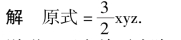
说明: 两个单项式除时，如果没有负号可以省略括号9x2y6z÷6xy3即表示(9x2·y6z) ÷ (6xy3).
【多项式除以单项式的法则】
先把多项式的每一项除以这个单项式，再把所有的商相加.
例 计算(12x3－5ax2－2a2x) ÷3x
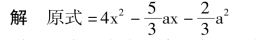
说明: 多项式除以单项式可以变成分式，通过约分的方式计算，上例可以如下解法:
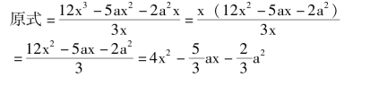
【多项式除以多项式的法则】
按同一字母降幂排列，仿照多位数相除的方法用竖式进行演算.
(1) 用除式的第一项去除被除式的第一项做为商式的第一项.
(2) 用商的第一项去乘除式；把积写在被除式下边同类项要对齐，从被除式中减去这个积.
(3) 把余式当做新的被除式.仿照上面的方法演算.到余式的次数低于除式的次数为止(或余式为零).
例 计算(8a3＋8a2b ＋4ab3＋b3) ÷ (2a ＋b)
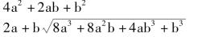
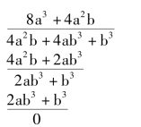
∴原式＝4a2＋2ab ＋b2
例 计算(a4＋a2b2＋b4) ÷ (a2－ab ＋b2) 解
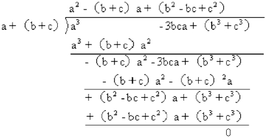
∴原式＝a2＋ab ＋b2
说明: 被除式排列中如缺项要留空位.
注意: 被除式减去乘积时的符号.
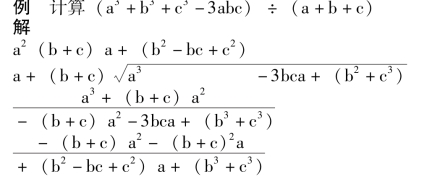
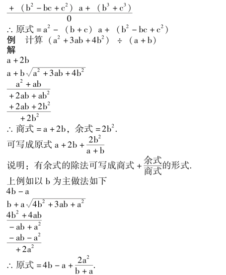
说明: 在有余式的多项式除法中按不同字母去做，它们得出的结果形式不同.但本质相同.如果用分式加法通分后相加，分子就会相同.